દશાંશને શબ્દોમાં અને અંકોમાં લખો
| સો હજાર | દસ હજાર | હજાર | સો | દશક | એકમ | દશાંશ | શતાંશ | સહસ્રાંશ | દસ-સહસ્રાંશ | લક્ષાંશ | |
|---|---|---|---|---|---|---|---|---|---|---|---|
| . |
“સ્થાનકિંમત” મથાળાવાળું કોષ્ટક છે. ડાબેથી જમણે “સો હજાર”, “દસ હજાર”, “હજાર”, “સો”, “દશક” અને “એકમ” છે. પછી એક ખાલી ખાનું છે, જેની નીચે દશાંશ ચિહ્ન છે. જમણે “દશાંશ”, “શતાંશ”, “સહસ્રાંશ”, “દસ-સહસ્રાંશ” અને “લક્ષાંશ” છે; આ અનુક્રમે 1/10, 1/100, 1/1000, 1/10000 અને 1/100000નાં સ્થાન છે.
દશાંશને શબ્દોમાં કેવી રીતે લખવું
ઉકેલ
ચાર
આ ચાર પગલાંની શ્રેણીનો પહેલો ભાગ છે; સંખ્યા 4.3 આપી છે. સૂચના છે: “પગલું 1. દશાંશ ચિહ્નની ડાબી બાજુની સંખ્યાને શબ્દોમાં લખો.” જમણે લખ્યું છે: “દશાંશ ચિહ્નની ડાબે 4 છે.” તેની જમણે “ચાર” અને પછી મોટી ખાલી જગ્યા છે.
બીજું પગલું છે: “પગલું 2. દશાંશ ચિહ્ન માટે ‘અને’ લખો.” જમણે “ચાર અને” પછી ખાલી જગ્યા છે.
ત્રીજું પગલું છે: “પગલું 3. દશાંશ ચિહ્નની જમણી બાજુના સંખ્યાભાગને પૂર્ણ સંખ્યા ગણીને શબ્દોમાં લખો.” જમણે “દશાંશ ચિહ્નની જમણે 3 છે” અને પછી “ચાર અને ત્રણ” પછી ખાલી જગ્યા છે.
છેલ્લું પગલું છે: “પગલું 4. દશાંશ સ્થાનનું નામ લખો.” જમણે “ચાર અને ત્રણ દશાંશ” લખ્યું છે.
દશાંશને શબ્દોમાં લખો.
- દશાંશ ચિહ્નની ડાબી બાજુની સંખ્યાને શબ્દોમાં લખો.
- દશાંશ ચિહ્ન માટે “અને” લખો.
- દશાંશ ચિહ્નની જમણી બાજુના સંખ્યાભાગને પૂર્ણ સંખ્યા ગણીને શબ્દોમાં લખો.
- છેલ્લા અંકના દશાંશ સ્થાનનું નામ લખો.
ઉકેલ
| દશાંશ ચિહ્નની ડાબી બાજુની સંખ્યાને શબ્દોમાં લખો. | ઋણ પંદર __________________________________ |
| દશાંશ ચિહ્ન માટે “અને” લખો. | ઋણ પંદર અને ______________________________ |
| દશાંશ ચિહ્નની જમણી બાજુની સંખ્યાને શબ્દોમાં લખો. | ઋણ પંદર અને પાંચસો એકોતેર __________ |
| 1 સહસ્રાંશના સ્થાને છે. | ઋણ પંદર અને પાંચસો એકોતેર સહસ્રાંશ |
દશાંશને અંકોમાં કેવી રીતે લખવું
ઉકેલ
ચૌદ અને ચોવીસ સહસ્રાંશ
.
14.
આ ચાર પગલાંની શ્રેણીનો પહેલો ભાગ છે. સૂચના છે: “પગલું 1. ‘અને’ શબ્દ શોધો—તે દશાંશ ચિહ્નનું સ્થાન સૂચવે છે. ‘અને’ની નીચે દશાંશ ચિહ્ન મૂકો. ‘અને’ પહેલાંના શબ્દોને પૂર્ણ સંખ્યામાં ફેરવીને દશાંશ ચિહ્નની ડાબે લખો.” જમણે “ચૌદ અને ચોવીસ સહસ્રાંશ” લખ્યું છે. નીચે એ જ શબ્દોમાં “અને”ને રેખાંકિત કર્યું છે. નીચે દશાંશ ચિહ્નની ડાબે નાની અને જમણે મોટી ખાલી જગ્યા છે. તેની નીચે નાની જગ્યામાં 14, પછી દશાંશ ચિહ્ન અને મોટી ખાલી જગ્યા છે.
દશાંશ શતાંશ સહસ્રાંશ
બીજું પગલું છે: “પગલું 2. છેલ્લા શબ્દમાં આપેલી સ્થાનકિંમત પરથી દશાંશ ચિહ્નની જમણે જરૂરી સ્થાનો ચિહ્નિત કરો.” જમણે “છેલ્લો શબ્દ સહસ્રાંશ છે” લખ્યું છે. આગળ 14 પછી દશાંશ ચિહ્ન અને ત્રણ નાની ખાલી જગ્યાઓ છે; નીચે “દશાંશ”, “શતાંશ” અને “સહસ્રાંશ” લખ્યાં છે.
ત્રીજું પગલું છે: “પગલું 3. ‘અને’ પછીના શબ્દોને સંખ્યામાં ફેરવીને દશાંશ ચિહ્નની જમણે લખો. છેલ્લો અંક છેલ્લા સ્થાને આવે તેમ ખાલી જગ્યામાં સંખ્યા લખો.” જમણે 14 પછી દશાંશ ચિહ્ન, એક ખાલી જગ્યા અને પછી અગાઉની બે ખાલી જગ્યામાં 2 અને 4 છે.
“ચૌદ અને ચોવીસ સહસ્રાંશ”ને 14.024 લખાય છે.
છેલ્લું પગલું છે: “પગલું 4. જરૂર મુજબ ખાલી સ્થાનોમાં શૂન્ય ભરો.” જમણે “દશાંશના સ્થાને શૂન્ય જરૂરી છે” લખ્યું છે. આગળ 14 પછી દશાંશ ચિહ્ન અને ખાલી જગ્યાઓમાં અનુક્રમે 0, 2 અને 4 છે. નીચે “‘ચૌદ અને ચોવીસ સહસ્રાંશ’ને 14.024 લખાય છે” લખ્યું છે.
દશાંશને અંકોમાં લખો.
- “અને” શબ્દ શોધો—તે દશાંશ ચિહ્નનું સ્થાન સૂચવે છે.
- “અને” શબ્દની નીચે દશાંશ ચિહ્ન મૂકો. “અને” પહેલાંના શબ્દોને પૂર્ણ સંખ્યામાં ફેરવો અને તેને દશાંશ ચિહ્નની ડાબે લખો.
- જો “અને” ન હોય, તો “0” લખીને તેની જમણે દશાંશ ચિહ્ન મૂકો.
- છેલ્લા શબ્દમાં આપેલી સ્થાનકિંમત પરથી દશાંશ ચિહ્નની જમણે જરૂરી સ્થાનો ચિહ્નિત કરો.
- “અને” પછીના શબ્દોને સંખ્યામાં ફેરવીને દશાંશ ચિહ્નની જમણે લખો. છેલ્લો અંક છેલ્લા સ્થાને આવે તેમ ખાલી જગ્યામાં સંખ્યા લખો.
- જરૂર મુજબ ખાલી સ્થાનોમાં શૂન્ય ભરો.
દશાંશને નજીકની આપેલી સ્થાનકિંમતમાં ફેરવો
દશાંશને નજીકની આપેલી સ્થાનકિંમતમાં કેવી રીતે ફેરવવું
ઉકેલ
આ ચાર પગલાંની શ્રેણીનો પહેલો ભાગ છે: “આપેલી સ્થાનકિંમત શોધીને તેના પર તીર મૂકો.” જમણે 18.379માં “શતાંશનું સ્થાન” પરથી તીર 7 તરફ જાય છે.
બીજું પગલું છે: “પગલું 2. આપેલી સ્થાનકિંમતની જમણી બાજુના અંકને રેખાંકિત કરો.” જમણે 18.379માં 9 રેખાંકિત છે.
હા: આપેલી સ્થાનકિંમતના અંકમાં 1 ઉમેરો.
ના: આપેલી સ્થાનકિંમતના અંકને બદલશો નહીં.
ત્રીજું પગલું છે: “પગલું 3. શું આ અંક 5 કરતાં મોટો અથવા બરાબર છે?” નીચે છે: “હા: આપેલી સ્થાનકિંમતના અંકમાં 1 ઉમેરો.” તેની નીચે છે: “ના: આપેલી સ્થાનકિંમતના અંકને બદલશો નહીં.” જમણે લખ્યું છે: “9 એ 5 કરતાં મોટો અથવા બરાબર છે, એટલે 7માં 1 ઉમેરો” આગળ 18.379માં 9 પાસે “કાઢો” અને 7 પાસે “1 ઉમેરો” લખ્યું છે.
18.379ને નજીકના શતાંશમાં ફેરવતાં 18.38 મળે છે.
છેલ્લું પગલું છે: “પગલું 4. જે અંક સુધી ફેરવવાનું છે તેની જમણી બાજુના બધા અંક કાઢીને સંખ્યા ફરી લખો.” જમણે 18.38 પછી લખ્યું છે: “18.379ને નજીકના શતાંશમાં ફેરવતાં 18.38 મળે છે.”
દશાંશને નજીકની આપેલી સ્થાનકિંમતમાં ફેરવો.
- આપેલી સ્થાનકિંમત શોધીને તેના પર તીર મૂકો.
- તે સ્થાનકિંમતની જમણી બાજુના અંકને રેખાંકિત કરો.
- શું આ અંક 5 કરતાં મોટો અથવા બરાબર છે?
- હા—આપેલી સ્થાનકિંમતના અંકમાં 1 ઉમેરો.
- ના—આપેલી સ્થાનકિંમતના અંકને બદલશો નહીં .
- જે અંક સુધી ફેરવવાનું છે તેની જમણી બાજુના બધા અંક કાઢીને સંખ્યા ફરી લખો.
ઉકેલ
- ⓐ નજીકના દશાંશમાં
દશાંશના સ્થાન પર તીર મૂકો. “દશાંશનું સ્થાન” શબ્દોમાંથી તીર 18.379ના 3 તરફ જાય છે અને તેનું દશાંશનું સ્થાન બતાવે છે.
આપેલી સ્થાનકિંમતની જમણી બાજુના અંકને રેખાંકિત કરો. 18.379માં “દશાંશનું સ્થાન” પરથી તીર 3 તરફ જાય છે; તેની જમણી બાજુનો અંક 7 રેખાંકિત છે.
7 એ 5 કરતાં મોટો અથવા બરાબર હોવાથી 3માં 1 ઉમેરો. 18.379માં 3 તરફ “1 ઉમેરો”નું તીર છે; જમણી બાજુના અંકો 7 અને 9 પાસે “કાઢો” છે. આ નજીકના દશાંશમાં ફેરવવાનું પગલું છે.
જે અંક સુધી ફેરવવાનું છે તેની જમણી બાજુના બધા અંક કાઢીને સંખ્યા ફરી લખો. સફેદ પૃષ્ઠભૂમિ પર 18.4 સંખ્યા છે.
ધ્યાન આપો: કાઢેલા અંકોની જગ્યાએ શૂન્ય મૂક્યાં નથી. એટલે 18.379ને નજીકના દશાંશમાં ફેરવતાં 18.4 મળે છે. - ⓑ નજીકની પૂર્ણ સંખ્યામાં
એકમના સ્થાન પર તીર મૂકો. “એકમનું સ્થાન” શબ્દોમાંથી તીર 18.379ના 8 તરફ જાય છે અને તેનું સ્થાન બતાવે છે.
આપેલી સ્થાનકિંમતની જમણી બાજુના અંકને રેખાંકિત કરો. 18.379માં “એકમનું સ્થાન” પરથી તીર 8 તરફ જાય છે; તેની જમણી બાજુનો અંક 3 રેખાંકિત છે.
3 એ 5 કરતાં મોટો અથવા બરાબર નથી, તેથી 8માં 1 ઉમેરશો નહીં. 18.379ને નીચેની નજીકની પૂર્ણ સંખ્યામાં ફેરવવાનું દર્શાવ્યું છે. દશાંશ ભાગ .379 “કાઢો” અને પૂર્ણ ભાગમાં “1 ઉમેરશો નહીં” લખ્યું છે, જેથી 18 મળે છે.
જે અંક સુધી ફેરવવાનું છે તેની જમણી બાજુના બધા અંક કાઢીને સંખ્યા ફરી લખો. સફેદ પૃષ્ઠભૂમિની ઉપર જમણી બાજુએ સંખ્યા 18 દેખાય છે.
એટલે 18.379ને નજીકની પૂર્ણ સંખ્યામાં ફેરવતાં 18 મળે છે.
દશાંશનો સરવાળો અને બાદબાકી કરો
દશાંશનો સરવાળો કે બાદબાકી કરો.
- દશાંશ ચિહ્નો એકની નીચે એક આવે તેમ સંખ્યાઓ લખો.
- જરૂર મુજબ ખાલી સ્થાનોમાં શૂન્ય વાપરો.
- સંખ્યાઓને પૂર્ણ સંખ્યા ગણીને સરવાળો કે બાદબાકી કરો. પછી આપેલી સંખ્યાઓનાં દશાંશ ચિહ્નોની નીચે જવાબમાં દશાંશ ચિહ્ન મૂકો.
ઉકેલ
| દશાંશ ચિહ્નો એકની નીચે એક આવે તેમ સંખ્યાઓ લખો. | |
| 23.5માં 5 પછી ખાલી સ્થાન માટે 0 મૂકો.
યાદ રાખો, . |
|
| સંખ્યાઓને પૂર્ણ સંખ્યા ગણીને સરવાળો કરો.
પછી સરવાળામાં દશાંશ ચિહ્ન મૂકો. |
ઉકેલ
| દશાંશ ચિહ્નો એકની નીચે એક આવે તેમ સંખ્યાઓ લખો.
યાદ રાખો: 20 પૂર્ણ સંખ્યા છે, એટલે 0 પછી દશાંશ ચિહ્ન મૂકો. |
|
| જમણી બાજુના ખાલી સ્થાનોમાં શૂન્ય મૂકો. | |
| બાદબાકી કરો અને જવાબમાં દશાંશ ચિહ્ન મૂકો. |
દશાંશનો ગુણાકાર અને ભાગાકાર કરો
(0.3) 1 દશાંશ સ્થાન (0.7) 1 દશાંશ સ્થાન (0.2) 1 દશાંશ સ્થાન (0.46) 2 દશાંશ સ્થાન દશાંશ સંખ્યાઓ અને તેમનાં દશાંશ સ્થાનો: (0.3), (0.7) અને (0.2)માં દરેકમાં 1 દશાંશ સ્થાન છે; (0.46)માં 2 દશાંશ સ્થાન છે. |
|
| અપૂર્ણાંકમાં ફેરવો. | 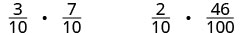 અપૂર્ણાંકનો ગુણાકાર દર્શાવતી બે પદાવલી: 3/10 ગુણ્યા 7/10 અને 2/10 ગુણ્યા 46/100. |
| ગુણાકાર કરો. | 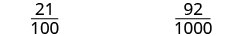 સફેદ પૃષ્ઠભૂમિ પર કાળા રંગમાં બે અપૂર્ણાંક બાજુબાજુએ છે: 21/100 અને 92/1000. |
| દશાંશમાં ફેરવો. | (0.21) 2 દશાંશ સ્થાન (0.092) 3 દશાંશ સ્થાન કૌંસ અને લખાણથી દશાંશ સ્થાનોની સંખ્યા બતાવી છે: 0.21માં 2 અને 0.092માં 3 દશાંશ સ્થાન છે. |
- જો તેમનાં ચિહ્નો સમાન હોય, તો ગુણનફળ ધન.
- જો તેમનાં ચિહ્નો જુદાં હોય, તો ગુણનફળ ઋણ.
દશાંશનો ગુણાકાર કરો.
- ગુણનફળનું ચિહ્ન નક્કી કરો.
- સંખ્યાઓની જમણી બાજુ સરખી ગોઠવીને એકની નીચે એક લખો. દશાંશ ચિહ્નોને થોડા સમય માટે અવગણીને પૂર્ણ સંખ્યાઓની જેમ ગુણાકાર કરો.
- દશાંશ ચિહ્ન મૂકો. ગુણનફળમાં દશાંશ સ્થાનોની સંખ્યા, અવયવોમાં દશાંશ સ્થાનોની સંખ્યાના સરવાળા જેટલી હોય છે.
- યોગ્ય ચિહ્ન સાથે ગુણનફળ લખો.
ઉકેલ
| (−3.9)(4.075) | |
| ચિહ્નો જુદાં છે. ગુણનફળ ઋણ થશે. | |
| સંખ્યાઓની જમણી બાજુ સરખી ગોઠવીને એકની નીચે એક લખો. | 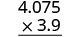 ઊભી ગોઠવણીમાં 4.075ને 3.9 વડે ગુણવાનો દાખલો છે. |
| ગુણાકાર કરો. | 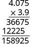 4.075ને 3.9 વડે ગુણવાની ઊભી ગણતરી છે. આંશિક ગુણનફળ 36675 અને એક સ્થાન ડાબે ખસેડેલું 12225 છે; સરવાળો 158925 છે. અંતિમ દશાંશ ચિહ્ન હજી મૂક્યું નથી. |
| અવયવોમાં દશાંશ સ્થાનોની સંખ્યાનો સરવાળો કરો (1 + 3). (−3.9) 1 દશાંશ સ્થાન (4.075) 3 દશાંશ સ્થાન બે દશાંશ (−3.9) અને (4.075)માં દશાંશ સ્થાનોની સંખ્યા દર્શાવી છે: (−3.9)માં 1 અને (4.075)માં 3 દશાંશ સ્થાન છે. જમણેથી 4 સ્થાન પછી દશાંશ ચિહ્ન મૂકો. |
4.075 × 3.9 36675 12225 15.8925 4 દશાંશ સ્થાન 4.075ને 3.9 વડે ગુણવાની પગલાંવાર ઊભી ગણતરીમાં 15.8925 મળે છે; 4 દશાંશ સ્થાન ગણવાનું દર્શાવ્યું છે. |
| ચિહ્નો જુદાં છે, એટલે ગુણનફળ ઋણ છે. | (−3.9)(4.075) = −15.8925 |
દશાંશને દસની ઘાત વડે ગુણો.
- 10ની ઘાતમાં જેટલાં શૂન્ય હોય તેટલાં સ્થાન દશાંશ ચિહ્ન જમણે ખસેડો.
- જરૂર મુજબ સંખ્યાના અંતે શૂન્ય ઉમેરો.
ઉકેલ
| 5.63(10) | |
| 10માં 1 શૂન્ય છે, એટલે દશાંશ ચિહ્ન 1 સ્થાન જમણે ખસેડો. | 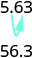 તીર બતાવે છે કે દશાંશ ચિહ્ન એક સ્થાન જમણે ખસેડતાં 5.63માંથી 56.3 મળે છે; તે 10 વડે ગુણાકાર દર્શાવે છે. |
ⓑ
| 5.63(100) | |
| 100માં 2 શૂન્ય છે, એટલે દશાંશ ચિહ્ન 2 સ્થાન જમણે ખસેડો. | 100માં 2 શૂન્ય છે, તેથી દશાંશ ચિહ્ન 2 સ્થાન જમણે ખસેડો. 100 વડે ગુણવા દશાંશ ચિહ્ન બે સ્થાન જમણે ખસેડવાનું બતાવ્યું છે: 5.63માંથી 563 મળે છે. |
ⓒ
| 5.63(1,000) | |
| 1,000માં 3 શૂન્ય છે, એટલે દશાંશ ચિહ્ન 3 સ્થાન જમણે ખસેડો. |  5.63માં દશાંશ ચિહ્નથી વાદળી તીર ત્રણ સ્થાન જમણે જાય છે; તે 1,000 વડે ગુણવા માટેનું દશાંશ સ્થાનાંતરણ છે. |
| અંતે એક શૂન્ય ઉમેરવું પડે છે. |  સંખ્યા 5,630 દર્શાવી છે. |
દશાંશનો ભાગાકાર કરો.
- ભાગફળનું ચિહ્ન નક્કી કરો.
- દશાંશ ચિહ્નને જમણી બાજુના છેલ્લા અંકની પાછળ “ખસેડીને” ભાજકને પૂર્ણ સંખ્યા બનાવો. ભાજ્યમાં પણ દશાંશ ચિહ્ન એટલાં જ સ્થાન “ખસેડો”—જરૂર મુજબ શૂન્ય ઉમેરો.
- ભાગાકાર કરો. ભાગફળમાં દશાંશ ચિહ્ન, ભાજ્યના દશાંશ ચિહ્નની ઉપર મૂકો.
- યોગ્ય ચિહ્ન સાથે ભાગફળ લખો.
ઉકેલ
| ચિહ્નો સમાન છે. | ભાગફળ ધન છે. |
| દશાંશ ચિહ્નને જમણી બાજુના છેલ્લા અંકની પાછળ “ખસેડીને” ભાજકને પૂર્ણ સંખ્યા બનાવો. | |
| ભાજ્યમાં દશાંશ ચિહ્ન એટલાં જ સ્થાન “ખસેડો”. |  25.65ને 0.06 વડે ભાગવાની ગોઠવણી છે. વાદળી તીર ભાગાકાર પહેલાં ભાજક અને ભાજ્ય બંનેમાં દશાંશ ચિહ્ન બે સ્થાન જમણે ખસેડવાનું બતાવે છે. |
| ભાગાકાર કરો. ભાગફળમાં દશાંશ ચિહ્ન, ભાજ્યના દશાંશ ચિહ્નની ઉપર મૂકો. |
 2565.0ને 6 વડે ભાગતાં ભાગફળ 427.5 મળે છે. બાદબાકી સહિતની આખી પગલાંવાર ગણતરી દર્શાવી છે. |
| યોગ્ય ચિહ્ન સાથે ભાગફળ લખો. |
ઉકેલ
| ભાગફળમાં દશાંશ ચિહ્ન, ભાજ્યના દશાંશ ચિહ્નની ઉપર મૂકો. | |
| સામાન્ય રીતે ભાગાકાર કરો. ક્યારે અટકવું? નાણાંની ગણતરી હોવાથી નજીકના સેન્ટ (શતાંશ)માં ફેરવીએ છીએ. તે માટે સહસ્રાંશના સ્થાન સુધી ભાગાકાર કરવો પડે છે. |
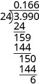 3.990ને 24 વડે ભાગવાની પગલાંવાર ગણતરીમાં 0.166 અને નીચે 6 શેષ દર્શાવ્યા છે. |
| નજીકના સેન્ટમાં ફેરવો. |
દશાંશ, અપૂર્ણાંક અને ટકાને એકબીજાના સ્વરૂપમાં ફેરવો
દશાંશને શુદ્ધ અપૂર્ણાંકમાં ફેરવો.
- છેલ્લા અંકની સ્થાનકિંમત નક્કી કરો.
- અપૂર્ણાંક લખો.
- અંશ—દશાંશ ચિહ્નની જમણી બાજુના અંકો વડે બનતી પૂર્ણ સંખ્યા
- છેદ—છેલ્લા અંકના સ્થાનને અનુરૂપ અપૂર્ણાંકના છેદમાં આવતી દસની ઘાત
ઉકેલ
| છેલ્લા અંકની સ્થાનકિંમત નક્કી કરો. | 0.3 દશાંશ 7 શતાંશ 4 સહસ્રાંશ દશાંશ સ્થાનકિંમતો દર્શાવી છે: 0.3 પાસે દશાંશ, 7 પાસે શતાંશ અને 4 પાસે સહસ્રાંશ. |
0.374 માટે અપૂર્ણાંક લખો:
|
|
| અપૂર્ણાંક સાદો કરો. | |
| સામાન્ય અવયવો વડે ભાગો. | એટલે, |
અપૂર્ણાંકને દશાંશમાં ફેરવો.
ઉકેલ
તેથી,
5.000ને 8 વડે ભાગતાં નિરપેક્ષ મૂલ્યનું ભાગફળ 0.625 છે. નીચે 48, આડી રેખા, 20, 16, આડી રેખા, 40, 40 અને અંતિમ આડી રેખા છે. આકૃતિની અંતિમ પંક્તિમાં ઋણ ચિહ્ન સાથે −5/8 = −0.625 લખ્યું છે.
આવર્ત દશાંશ
ઉકેલ
; 43ને 22 વડે ભાગો.
| 1.95454 | |
| 22⟌43.00000 | |
| 22 | |
| 210 | |
| 198 | |
| 120 | ← 120 ફરી આવે છે |
| 110 | |
| 100 | ← 100 ફરી આવે છે |
| 88 | |
| 120 | ← |
| 110 | |
| 100 | ← |
| 88 | |
| … |
પેટર્ન ફરી આવે છે, એટલે ભાગફળના અંકો પણ ફરી આવશે.
તેથી,
43/22 આપ્યું છે. સૂચના છે: “43ને 22 વડે ભાગો.” 43.00000ને 22 વડે ભાગવાની ગોઠવણીમાં ભાગફળ 1.95454 છે. નીચે 22, આડી રેખા, 210, 198, આડી રેખા, 120, 110, આડી રેખા, 100, 88, આડી રેખા, 120, 110, આડી રેખા, 100, 88, આડી રેખા અને પછી ત્રણ ટપકાં છે. 120 અને 100 ફરીફરી આવે છે તે દર્શાવ્યું છે. “પેટર્ન ફરી આવે છે, એટલે ભાગફળના અંકો પણ ફરી આવશે” લખ્યું છે. અંતે 43/22 = 1.954માં 54ની ઉપર નાની આડી રેખા છે.
ઉકેલ
| ને દશાંશમાં ફેરવો. | 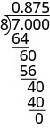 7ને 8 વડે ભાગવાની પગલાંવાર ગણતરીમાં દશાંશ ભાગફળ 0.875 અને શેષ શૂન્ય મળે છે. |
|
| સરવાળો કરો. | ||
| એટલે, |
ટકા
| 100 છેદવાળા ગુણોત્તર તરીકે લખો. | |||
| અંશને છેદ વડે ભાગીને અપૂર્ણાંકને દશાંશમાં ફેરવો. |
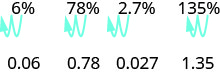
પહેલા ભાગમાં 6%માં 6 અને % વચ્ચેના સ્થાનથી તીર 6ની ડાબે અને પછી વધુ એક સ્થાન ડાબે જાય છે; નીચે 0.06 છે. બીજા ભાગમાં 78%માં 8 અને % વચ્ચેના સ્થાનથી તીર 7 અને 8 વચ્ચે અને પછી 7ની ડાબે જાય છે; નીચે 0.78 છે. ત્રીજા ભાગમાં 2.7%માં તીર દશાંશ ચિહ્નથી 2ની ડાબે અને પછી વધુ એક સ્થાન ડાબે જાય છે; નીચે 0.027 છે. ચોથા ભાગમાં 135%માં 5 અને % વચ્ચેના સ્થાનથી તીર 3 અને 5 વચ્ચે અને પછી 1 અને 3 વચ્ચે જાય છે; નીચે 1.35 છે.
ઉકેલ
| ⓐ | |
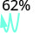 62%માં દશાંશ ચિહ્નનું સ્થાન 2 પછી છે; વાદળી તીર ત્યાંથી બે સ્થાન ડાબે ખસેડવાનું બતાવે છે. |
|
| દશાંશ ચિહ્ન બે સ્થાન ડાબે ખસેડો. |
| ⓑ | |
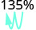 135%માં દશાંશ ચિહ્નનું સ્થાન 5 પછી છે; વાદળી તીર ત્યાંથી બે સ્થાન ડાબે, 1 અને 3 વચ્ચે, ખસેડવાનું બતાવે છે. |
|
| દશાંશ ચિહ્ન બે સ્થાન ડાબે ખસેડો. |
| ⓒ | |
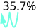 35.7%માં વાદળી તીર દશાંશ ચિહ્નને બે સ્થાન ડાબે, 3ની પહેલાં, ખસેડવાનું બતાવે છે. |
|
| દશાંશ ચિહ્ન બે સ્થાન ડાબે ખસેડો. |
| અપૂર્ણાંક તરીકે લખો. | |||
| છેદ 100 છે. | |||
| ગુણોત્તરને ટકા તરીકે લખો. |
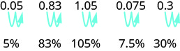
પહેલા ભાગમાં 0.05માં દશાંશ ચિહ્નથી તીર 0 અને 5 વચ્ચે અને પછી 5ની પાછળ જાય છે; નીચે 5% છે. બીજામાં 0.83માં તીર 8 અને 3 વચ્ચે અને પછી 3ની પાછળ જાય છે; નીચે 83% છે. ત્રીજામાં 1.05માં તીર 0 અને 5 વચ્ચે અને પછી 5ની પાછળ જાય છે; નીચે 105% છે. ચોથામાં 0.075માં તીર 0 અને 7 વચ્ચે અને પછી 7 અને 5 વચ્ચે જાય છે; નીચે 7.5% છે. પાંચમામાં 0.3માં તીર 3ની પાછળ અને પછી વધુ એક સ્થાન જમણે જાય છે; નીચે 30% છે.
ઉકેલ
| ⓐ | |
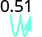 0.51માં વાદળી તીર દશાંશ ચિહ્નને બે સ્થાન જમણે, 1ની પાછળ, ખસેડવાનું બતાવે છે. |
|
| દશાંશ ચિહ્ન બે સ્થાન જમણે ખસેડો. |
| ⓑ | |
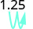 1.25માં વાદળી તીર દશાંશ ચિહ્નને બે સ્થાન જમણે, 5ની પાછળ, ખસેડવાનું બતાવે છે. |
|
| દશાંશ ચિહ્ન બે સ્થાન જમણે ખસેડો. |
| ⓒ | |
 0.093માં વાદળી તીર દશાંશ ચિહ્નને બે સ્થાન જમણે, 9 અને 3 વચ્ચે, ખસેડવાનું બતાવે છે. |
|
| દશાંશ ચિહ્ન બે સ્થાન જમણે ખસેડો. |
મુખ્ય ખ્યાલો
- દશાંશને શબ્દોમાં લખો
- દશાંશ ચિહ્નની ડાબી બાજુની સંખ્યાને શબ્દોમાં લખો.
- દશાંશ ચિહ્ન માટે “અને” લખો.
- દશાંશ ચિહ્નની જમણી બાજુના સંખ્યાભાગને પૂર્ણ સંખ્યા ગણીને શબ્દોમાં લખો.
- છેલ્લા અંકના દશાંશ સ્થાનનું નામ લખો.
- દશાંશને અંકોમાં લખો
- “અને” શબ્દ શોધો—તે દશાંશ ચિહ્નનું સ્થાન સૂચવે છે. “અને”ની નીચે દશાંશ ચિહ્ન મૂકો. “અને” પહેલાંના શબ્દોને પૂર્ણ સંખ્યામાં ફેરવીને દશાંશ ચિહ્નની ડાબે લખો. જો “અને” ન હોય, તો “0” લખીને તેની જમણે દશાંશ ચિહ્ન મૂકો.
- છેલ્લા શબ્દમાં આપેલી સ્થાનકિંમત પરથી દશાંશ ચિહ્નની જમણે જરૂરી સ્થાનો ચિહ્નિત કરો.
- “અને” પછીના શબ્દોને સંખ્યામાં ફેરવીને દશાંશ ચિહ્નની જમણે લખો. છેલ્લો અંક છેલ્લા સ્થાને આવે તેમ ખાલી જગ્યામાં સંખ્યા લખો.
- જરૂર મુજબ ખાલી સ્થાનોમાં શૂન્ય ભરો.
- દશાંશને નજીકની આપેલી સ્થાનકિંમતમાં ફેરવો
- આપેલી સ્થાનકિંમત શોધીને તેના પર તીર મૂકો.
- તે સ્થાનકિંમતની જમણી બાજુના અંકને રેખાંકિત કરો.
- શું આ અંક 5 કરતાં મોટો અથવા બરાબર છે? હા—આપેલી સ્થાનકિંમતના અંકમાં 1 ઉમેરો. ના—આપેલી સ્થાનકિંમતના અંકને બદલશો નહીં .
- જે અંક સુધી ફેરવવાનું છે તેની જમણી બાજુના બધા અંક કાઢીને સંખ્યા ફરી લખો.
- દશાંશનો સરવાળો કે બાદબાકી કરો
- દશાંશ ચિહ્નો એકની નીચે એક આવે તેમ સંખ્યાઓ લખો.
- જરૂર મુજબ ખાલી સ્થાનોમાં શૂન્ય વાપરો.
- સંખ્યાઓને પૂર્ણ સંખ્યા ગણીને સરવાળો કે બાદબાકી કરો. પછી આપેલી સંખ્યાઓનાં દશાંશ ચિહ્નોની નીચે જવાબમાં દશાંશ ચિહ્ન મૂકો.
- દશાંશનો ગુણાકાર કરો
- ગુણનફળનું ચિહ્ન નક્કી કરો.
- સંખ્યાઓની જમણી બાજુ સરખી ગોઠવીને એકની નીચે એક લખો. દશાંશ ચિહ્નોને થોડા સમય માટે અવગણીને પૂર્ણ સંખ્યાઓની જેમ ગુણાકાર કરો.
- દશાંશ ચિહ્ન મૂકો. ગુણનફળમાં દશાંશ સ્થાનોની સંખ્યા, અવયવોમાં દશાંશ સ્થાનોની સંખ્યાના સરવાળા જેટલી હોય છે.
- યોગ્ય ચિહ્ન સાથે ગુણનફળ લખો.
- દશાંશને દસની ઘાત વડે ગુણો
- 10ની ઘાતમાં જેટલાં શૂન્ય હોય તેટલાં સ્થાન દશાંશ ચિહ્ન જમણે ખસેડો.
- જરૂર મુજબ સંખ્યાના અંતે શૂન્ય ઉમેરો.
- દશાંશનો ભાગાકાર કરો
- ભાગફળનું ચિહ્ન નક્કી કરો.
- દશાંશ ચિહ્નને જમણી બાજુના છેલ્લા અંકની પાછળ “ખસેડીને” ભાજકને પૂર્ણ સંખ્યા બનાવો. ભાજ્યમાં પણ દશાંશ ચિહ્ન એટલાં જ સ્થાન “ખસેડો”—જરૂર મુજબ શૂન્ય ઉમેરો.
- ભાગાકાર કરો. ભાગફળમાં દશાંશ ચિહ્ન, ભાજ્યના દશાંશ ચિહ્નની ઉપર મૂકો.
- યોગ્ય ચિહ્ન સાથે ભાગફળ લખો.
- દશાંશને શુદ્ધ અપૂર્ણાંકમાં ફેરવો
- છેલ્લા અંકની સ્થાનકિંમત નક્કી કરો.
- અપૂર્ણાંક લખો: અંશ—દશાંશ ચિહ્નની જમણી બાજુના અંકો વડે બનતી પૂર્ણ સંખ્યા; છેદ—છેલ્લા અંકના સ્થાનને અનુરૂપ અપૂર્ણાંકના છેદમાં આવતી દસની ઘાત.
- અપૂર્ણાંકને દશાંશમાં ફેરવો અપૂર્ણાંકના અંશને છેદ વડે ભાગો.
અભ્યાસથી નિપુણતા
રોજિંદું ગણિત
લેખન અભ્યાસ
સ્વમૂલ્યાંકન
હું કરી શકું છું…
| વિશ્વાસપૂર્વક | થોડી મદદથી | ના—હજુ સમજાયું નથી! |
|---|---|---|
| વિશ્વાસપૂર્વક | થોડી મદદથી | ના—હજુ સમજાયું નથી! |
|---|---|---|
| વિશ્વાસપૂર્વક | થોડી મદદથી | ના—હજુ સમજાયું નથી! |
|---|---|---|
| વિશ્વાસપૂર્વક | થોડી મદદથી | ના—હજુ સમજાયું નથી! |
|---|---|---|
| વિશ્વાસપૂર્વક | થોડી મદદથી | ના—હજુ સમજાયું નથી! |
|---|---|---|
છ હરોળ અને ચાર સ્તંભનું કોષ્ટક છે. પહેલી મથાળાની હરોળમાં ડાબેથી “હું કરી શકું છું…”, “વિશ્વાસપૂર્વક”, “થોડી મદદથી” અને “ના—હજુ સમજાયું નથી!” છે. પહેલા સ્તંભમાં “દશાંશને શબ્દોમાં અને અંકોમાં લખવા”, “દશાંશને નજીકની આપેલી સ્થાનકિંમતમાં ફેરવવા”, “દશાંશનો સરવાળો અને બાદબાકી કરવા”, “દશાંશનો ગુણાકાર અને ભાગાકાર કરવા” અને “દશાંશ, અપૂર્ણાંક અને ટકાને એકબીજાના સ્વરૂપમાં ફેરવવા” છે. બાકીનાં ખાનાં ખાલી છે.